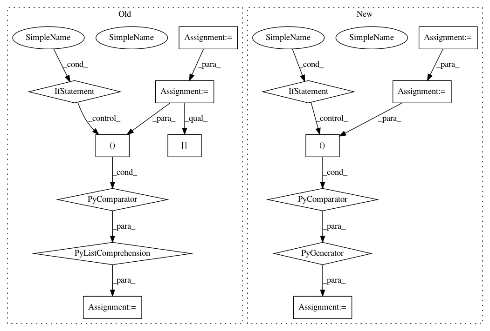

dbe043dfa9e4b9c6f16406d2842208f7c75d26a9,io/eolearn/io/processing_api.py,SentinelHubInputTask,_extract_data,#SentinelHubInputTask#Any#Any#Any#,283
Before Change
Extract data from the received images and assign them to eopatch features
images = ((img["default.tif"], img["userdata.json"]) for img in images)
images = [(img, meta.get("norm_factor", 0)) for img, meta in images]
for f_type, f_name_src, f_name_dst in self.additional_data:
eopatch[(f_type, f_name_dst)] = self._extract_additional_data(images, f_type, f_name_src, shape)
if self.bands:
self._extract_bands(eopatch, images, shape)
After Change
def _extract_data(self, eopatch, images, shape):
Extract data from the received images and assign them to eopatch features
rtypes = [rtype for rtype in self.request_types if rtype.id != "bands"]
itr_tifs = ((rtype, [img[rtype.id + ".tif"] for img in images], self.request_types[rtype]) for rtype in rtypes)
for rtype, tifs, bands in itr_tifs:
for band in bands:
feature = rtype.feature_type, band
eopatch[feature] = self._extract_array(tifs, bands.index(band), shape, rtype.np_dtype)
if self.bands_feature:
self._extract_bands_feature(eopatch, images, shape)
return eopatch
In pattern: SUPERPATTERN
Frequency: 3
Non-data size: 15
Instances
Project Name: sentinel-hub/eo-learn
Commit Name: dbe043dfa9e4b9c6f16406d2842208f7c75d26a9
Time: 2020-02-02
Author: jovan.visnjic@sinergise.com
File Name: io/eolearn/io/processing_api.py
Class Name: SentinelHubInputTask
Method Name: _extract_data
Project Name: gboeing/osmnx
Commit Name: c46a77985576103fc92ac95395f4d8410f56f029
Time: 2020-12-02
Author: boeing@usc.edu
File Name: osmnx/distance.py
Class Name:
Method Name: get_nearest_edge
Project Name: gboeing/osmnx
Commit Name: fe8f96e9981376e26984bfa4812916d14856dc05
Time: 2020-11-18
Author: boeing@usc.edu
File Name: osmnx/distance.py
Class Name:
Method Name: get_nearest_edge